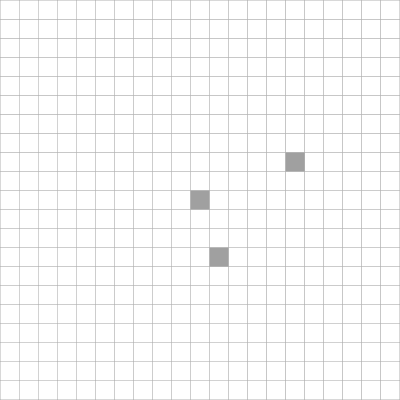

Visualize 2D DGtal objects with LibBoard
This part of the manual describes how to export 2D DGtal objects with LibBoard in order to construct SVG, EPS or XFIG drawings. This document is dedicated both to DGtal users and developers.
Table of contents:
- Short overview of the LibBoard library
- How to use LibBoard objects in DGtal ?
- How to create your own export ?
Short overview of the LibBoard library
LibBoard is a C++ library for simple Postscript, SVG, and XFig drawings.
(Copyleft, LGPL) 2007 Sébastien Fourey - GREYC ENSICAEN
It allows simple drawings in:
- Encapsulated Postcript files (EPS) ;
- XFig files (FIG) ;
- Scalable Vector Graphics files (SVG).
The main class of the library is the LibBoard::Board class. It is intended to be as simple as possible so that it can be used quickly in programs to generate the kind of figure one would rather not draw by hand, but which can be easily drawn by a computer (C++) program.
A clone of the LibBoard source code (release: 0.8.8-3) has been included in DGtal. Its classes are grouped into the namespace Board.
How to use LibBoard objects in DGtal ?
Basic usage
Many DGtal objects implement a method selfDraw which aims at defining the way the objects export themselves with LibBoard commands.
For instance, the selfDraw method of a digital set (any model of CDigitalSet like DigitalSetBySTLSet or DigitalSetBySTLVector) appends to a given LibBoard::Board square primitives for each points of the set.
For example, let us define a basic 2D set on Z^2:
#include "DGtal/base/Common.h" #include "DGtal/kernel/SpaceND.h" #include "DGtal/kernel/domains/HyperRectDomain.h" #include "DGtal/kernel/sets/DigitalSetBySTLVector.h" #include "DGtal/kernel/sets/DigitalSetBySTLSet.h" #include "DGtal/kernel/sets/DigitalSetSelector.h" ... typedef SpaceND<int,2> Z2; typedef HyperRectDomain<Z2> DomainType; typedef Z2::Point Point; Point p1( -10, -10 ); Point p2( 10, 10 ); DomainType domain( p1, p2 ); typedef DigitalSetSelector < DomainType, BIG_DS + HIGH_ITER_DS + HIGH_BEL_DS >::Type SpecificSet; SpecificSet mySet( domain ); Point c( 0, 0 ); mySet.insert( c ); Point d( 5, 2 ); mySet.insert( d ); Point e( 1, -3 ); mySet.insert( e );
The basic selfDraw usage can be skected as follows:
LibBoard::Board board; board.setUnit(Board::UCentimeter); mySet.selfDraw(board); board.saveSVG( "simpleSet.svg" );
leading to the drawing (after a SVG->PNG conversion):
We can enhance the drawing displaying digital domain (any models of CDigitalDomain) containing the set. Since we have at least two ways to display the domain, several selfDraw methods exist. For example, you can either do:
LibBoard::Board board; board.setUnit(Board::UCentimeter); domain.selfDrawAsGrid(board) mySet.selfDraw(board); board.saveSVG( "simpleSet-grid.svg" );
or
LibBoard::Board board; board.setUnit(Board::UCentimeter); domain.selfDrawAsPaving(board) mySet.selfDraw(board); board.saveSVG( "simpleSet-Paving.svg" );

selfDrawAsGrid result. |

selfDrawAsPaving result. |
Similarly, objects of the class PointVector can be drawn either as a Point, or as a Vector. In this case, a single selfDraw method exits with two interface:
- void selfDraw(LibBoard::Board & board ): the object is drawn as Point (Board::Dot)
- void selfDraw(LibBoard::Board & board , const PointVector & aPoint): the object is drawn as a Vector (Board::Arrow)
As illustrated in the document Digital topology and digital objects, the following drawings represent an object with two different adjacency relationships. To obtain such figures, we have call selfDraw methods of the following objects:
- HyperRectDomain: to display the main board;
- DigitalSetBySTLVector: to display the object as a digital set;
- PointVector: to display the set of adjacency relationships as arrows.

Illustration of a Digital Object with the 4-adjacency | 
Illustration of a Digital Object with the 8-adjacency |
Advanced usage
By default, each method selfDraw uses a specific style. For example, the default style or color associated to a digital domain is either a dashed grid with gray color, or a set of unfilled gray squares (see HyperRectDomain::SelfDrawStyleGrid and HyperRectDomain::SelfDrawStylePaving).
If the user wants to customize the output color for instance, he or she have to:
- Create a C++ class or struct with a constructor taking a LibBoard instance in parameter and such that the LibBoard commands to customize the colors belongs to this constructor.
- Use this class as a template parameter of the selfDraw methods.
For example, if you want the simple set considered above to be depicted in red with green edges, just create your own style "struct" as follows:
struct SelfDrawStyleCustom { SelfDrawStyleCustom(LibBoard::Board & aboard) { aboard.setPenColorRGBi(0,255,0); aboard.setFillColorRGBi(255,0,0); } };
Then, we use this customized style in the selfDraw calls:
LibBoard::Board board; board.setUnit(Board::UCentimeter); mySet.selfDraw<SelfDrawStyleCustom>(board); board.saveSVG( "simpleSet.svg" );
and we obtain:

How to create your own export ?
To create a LibBoard export on your object, you have to
- Create a SelfDrawStyle struct (e.g. DigitalSetBySTLVector::SelfDrawStyle)
- Implement a method selfDraw the will perform the drawing with a default template parameter set to SelfDrawDefaultStyle.
The second item can be done using the following declaration code for instance:
/* Draw the object on a LibBoard board @param board the output board where the object is drawn. @tparam Functor a Functor to specialize the Board style */ template<typename Functor> void selfDraw(LibBoard::Board & board ) const; /* Draw the object on a LibBoard board @param board the output board where the object is drawn. */ void selfDraw(LibBoard::Board & board ) const { selfDraw<SelfDrawStyle>(board); }